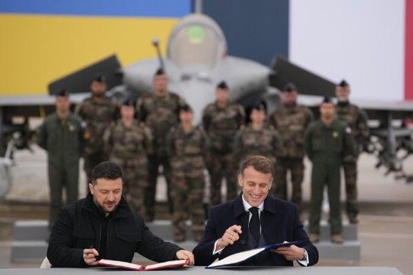

世界苦茶11月18日新闻 | 35条 | 联合国批准美国加沙方案

联合国批准美国加沙方案 | 法国像乌克兰提供100架战斗机 | 孟加拉前总理被判死刑 | 多个日本电影在中国撤档 | 特朗普将向沙特出售F-35战机
苦茶数据
美元兑人民币：7.11（昨日7.10，前日7.10）
美元兑日元：155.02（昨日154.65，前日154.04）
上证指数：3947（昨日3973，前日3990)
标普500指数：6672（昨日6734，前日6737）
比特币：90105（昨日95027，前日95958）
布伦特原油：63.76（昨日63.87，前日64.39）
中国新闻
• 恢复“韩中日”表述 韩媒：李在明政府对华释善意。
韩国总统府星期天宣布，将东北亚三国的官方称谓顺序正式统一为“韩中日”，取代之前使用的“韩日中”。韩国媒体认为，这是李在明政府对中国释放的间接善意。据韩联社引述韩国总统府相关人士报道称，此举是基于韩语社会长期使用习惯，“韩中日”在民间和媒体中更为普遍。报道指在现任总统李在明积极推动韩中关系全面修复的背景下，恢复“韩中日”表述，是对中国释放间接善意。也有观点认为，这是李在明务实外交基调下采取的措施。上一任政府基于偏向日本的外交，排斥中国，损害韩国实际利益。李在明11月初在韩国庆州与中国国家主席习近平举行会谈时表示，将全面修复韩中关系，两国作为战略合作伙伴，一道迈入务实与互惠共赢之路。
• 中国如何在遥感研究竞赛中将美国抛在身后。
从88%降至9%——刺眼数据揭示美国在遥感研究的衰落、中国的崛起 该国数十年来持续的资助潮已将地球观测科学的主导地位从美国转移开来 那是2015年，纽约大学教授黛布拉·莱弗坐在布鲁克林的办公桌前，翻阅又一叠关于遥感的研究论文。当她扫视作者单位时停住了——那些曾经被美国大学和NASA实验室姓名挤满的期刊，开始刊登来自北京、武汉和上海的成果。接下来的几年里，这些点滴变成了波浪——随后成为海啸。回到20世纪90年代，美国在遥感领域的主导地位如同今日硅谷在软件领域的统治：几乎生产了该领域约90%的研究，而来自中国的论文几乎不存在。
• 中日关系紧张殃及电影 《蜡笔小新》等撤档。
2025年11月17日日本首相高市早苗一句台湾出事即“威胁日本生存局势”的言论，被北京看作触碰了多条红线。两国各个领域的关系瞬间走向恶化。中日关系最近紧绷，多部日本动画电影突然被喊卡，据浙江广播电视集团旗下“中国蓝新闻”报道，原定近期上映的《蜡笔小新：炽热的春日部舞者们》、《工作细胞》均宣布暂缓上映。值得注意的是，近日正在中国上映的日本知名动画电影《鬼灭之刃：无限城篇 第一章 猗窝座再袭》引爆观影热潮。根据票房统计，该片在中国上映短短3 天即斩获 3.73 亿元亿人民币，刷新日本电影在中国首周末票房纪录。
• 中国公布航母战术：在岛链之外进行“边打边训”演练。
中国航母在第一岛链之外进行“实战化训练” 人民日报透露海军提高起降频率和远海作战备战的新动向 这一披露是上周《解放军报》一篇文章中的细节，该文介绍了中国三艘航母的训练活动——此前解放军对这类信息一直高度保密。中国首艘航母辽宁号2012年入役，并在2016年12月首次在西太平洋开展训练——意味着已跨越第一岛链。文章称，辽宁号在第一岛链之外已进行过10余次“边打边练”演训。第一岛链从冲绳延伸至台湾和菲律宾。文章还澄清，辽宁号并非网络评论所称的“训练舰”或“试验舰”。
• 驻美大使表示，不要再“污名化”中国学生和研究人员。
“有识之士”应当站出来反对不公平的攻击和“抹黑”，首席特使谢锋表示 中国驻美大使为国内学生和学者辩护，称他们被“抹黑”为国家安全威胁。谢锋在致美中香港论坛的视频讲话中表示：“美国个别人士以偏见的眼光将中国学生，学者和友好组织视为国家安全威胁，并千方百计对其进行抹黑和阻挠。中国和美国有识之士应当站出来，反对将人与人之间的交往污名化的不当做法，共同努力移除障碍，为支持两国社会各界更大范围的相互理解，交流与合作营造有利氛围。
印太新闻
• 台海若有事牵动全球 台湾学者吁建立自主兵推视角。
日本新任首相高市早苗在国会“台湾有事”答询，引发中日关系短时间内急剧恶化。专注兵棋推演的台湾学者说，尽管这番说法引起争议，但从客观上看台海情势确实牵动区域乃至全球局势，只是长期以来针对台海的兵推都过度聚焦两岸兵力投射。台湾应该补足这个视角的缺口，建立自己的兵推模式与话语权。高市早苗11月7日在众议院备询时提出，台湾有事将构成日本的“存亡危机事态”，日本得以行使集体自卫权。这番言论引来中国大陆强烈不满，除了接连提出旅游与留学示警，自星期一起连续两天在黄海举行实弹军演。
• 孟加拉国被罢黜的总理因在镇压学生抗议中的作用被判处死刑。
孟加拉国一法院周一以危害人类罪判处被罢黜的孟加拉国首相谢赫·哈西娜死刑，理由是她在去年由学生领导的起义镇压中所扮演的角色，联合国称该镇压导致多达1400人死亡。该国位于首都达卡的国内战争罪行法庭——国际罪行法庭还判处哈西娜的内政部长阿萨杜扎曼·汗死刑。一个由三名法官组成的法庭在一场持续数小时并进行现场直播的庭审中宣布了裁决。哈西娜和汗于去年八月逃往印度，并在缺席情况下被判刑。另一名嫌疑人、一名前警察局长在成为国家证人并承认犯有危害人类罪后，被判处五年监禁。
• 郑丽文和黄国昌星期三会面谈“蓝白合”。
台湾在野的中国国民党主席郑丽文和民众党主席黄国昌，预定星期三举行首次正式会面，初步先确定两党合作的政策和愿景，希望为2026年地方选举合作奠基，进而于2028年下架执政的民进党。郑丽文和黄国昌的会面，将比照今年4月时任国民党主席朱立伦与黄国昌的“在野领袖峰会”模式，全程公开。当时朱黄商议重点是，反对大罢免及因应美国关税。2024年大选，国民党和民众党曾有意合作，但彼此因猜忌与利益计算，“蓝白合”功败垂成。国民党几乎因民进党发起的大罢免团灭，民众党创党主席柯文哲因京华城案被以贪污罪起诉，入狱一年，故两个在野党这次都以最大的诚意和善意要促进“蓝白合”。相对民进党已指定由立委苏巧慧参选新北市长。
• 汉堡王日本业务将出售，高盛获优先谈判权。
日本经济新闻11月17日获悉，香港投资基金Affinity Equity Partners将出售「汉堡王日前获得了优先谈判权。收购金额将达到700亿日元规模。汉堡王正在日本国内扩大规模，高盛将通过餐饮领域的经验和投资支援业务增长。高盛将收购运营日本业务的BK Japan Holdings。日本的汉堡王业务在日本国内约有310家店铺。2024年度的销售额比上年度增长29%，达到322亿日元。特色是直火炙烤的烟熏风味牛肉饼。
• 韩国提议与朝鲜举行会谈，以防止在边境发生意外武装冲突。
韩国周一提出与朝鲜进行会谈，澄清双方的边界线并缓解军事紧张，称朝鲜士兵反复越过边界已引发对武装冲突的担忧。韩国军方表示，自去年开始加强前线防御工事以来，多次向入侵军事分界线的朝鲜部队鸣枪警告以驱离对方。朝鲜否认其士兵越界的指控并威胁将作出未指明的回应。韩国国防部副部长周一表示，韩国正在提议举行军事会谈，以防止意外武装冲突并降低与朝鲜的紧张局势。他说，朝鲜越界可能是由于双方对边界线认识不同所致，许多在1950—1953年朝鲜战争结束时设立的军事分界线标志已遗失。目前尚不清楚朝鲜是否会接受韩国的会谈提议。
• 日警方逮捕涉嫌伪造金条标识并套现的中国团伙。
东京警视厅以在疑似通过走私和电信诈骗获得的金条上刻印真实交易商的名字并进行销售为由，查处了一个包含中国人等的团伙。有分析认为，这是伪装成正规流通的金条，瞄准消费税差价和为犯罪收益洗钱的新手法。出售额被认为达到95亿日元，日本警方正加紧查明全貌。通过对调查相关人员的采访获悉，警视厅特别搜查课等在11月14日之前，以诈骗、伪造及使用盖章私人文件的嫌疑，逮捕了中国籍男子等8人。逮捕理由是该团伙涉嫌在3~4月出示伪造的商品明细表等出售37公斤金条，从日本国内2家贵金属公司骗取约6亿日元。
科技新闻
• Anthropic称中国黑客利用该公司AI技术发起网络攻击。
Anthropic称中国黑客利用该公司AI技术发起网络攻击 人工智能初创公司Anthropic上周四表示，中国政府支持的黑客利用该公司的人工智能技术对一批科技公司和政府机构发动了一次高度自动化的网络攻击。Anthropic称，9月发生的这次大规模网络间谍活动是首例公开报道的由人工智能驱动的代理在有限人工干预下自动收集目标信息的案例。该公司发布了一份报告，详细说明攻击者如何利用其人工智能工具编写代码，指挥Anthropic的AI代理“Claude Code”执行攻击行动。该公司表示，这场行动中仅约10%至20%的操作由人类执行。
经济新闻
• 中国特稿：中央化债10万亿元一年后 中国多地政府面临稳增长与投资失速压力。
2025年收尾之际，困扰中国经济的除了挥之不去的通缩阴影，还有愈发明显的投资失速。今年9月，中国固定资产投资单月增速降至负6.5％的近五年最低点，前三季固定资产投资累计同比下降0.5%，这是该指标自2020年10月以来首次出现负增长。星期五公布的最新数据显示，1至10月固定资产投资累计同比降幅扩大至1.7%；根据第三方测算，固定资产投资单月增速10月进一步降至负12.2%。地区生产总值排名全国前四的广东、江苏、山东和浙江，今年前三季的固定资产投资跌幅均超出全国水平。
• 中德达成27项共识包括反对贸易保护主义。
德国副总理兼财政部长克林拜尔与中国副总理何立峰，星期一在北京共同主持第四次中德高级别财金对话。两国达成27项共识，包括反对单边主义和贸易保护主义。克林拜尔是德国默茨政府首位访华的高层，也是中德时隔两年再度举行相关对话。中国官媒新华社报道，何立峰星期一在上述对话表示，中方愿同德方一道，落实好两国领导人达成的重要共识，开启全方位战略伙伴关系新篇章，为世界经济稳定增长作出新贡献。报道指出，双方对话期间达成一系列互利共赢的成果和共识。
• 因迹象显示中国正在加大采购，美国大豆期货回升。
在中国加大采购迹象下，美国大豆期货回升 在对华采购迹象出现后，大豆期货出现跳涨，为美国农户带来一线希望，此前采购曾一度停滞。周一芝加哥大豆价格一度上涨高达3.2%，创17个月新高，此前美国总统唐纳德·特朗普表示中国正在购买大豆。“他们会进行大量大豆采购，”他周五在空军一号上对记者说，并补充称这些采购可能在春季之前开始。经纪公司AgResource表示，中国进口商已从美国购买了7到10船大豆，其中一些将于1月装运，另一些计划在6月或更晚装运。大豆一直是美中贸易紧张关系中的焦点之一，中国是这种油籽的全球最大进口国。本季中国大部分时间都未从美国大量采购大豆，压缩了美国种植户的市场空间。
• 欧盟投资银行将与澳大利亚在关键原材料领域开展合作。
欧盟的投资银行将与澳大利亚政府在关键原材料领域展开合作 此举旨在减少对中国的依赖——大多数七国集团和欧盟国家在从稀土磁体到电池金属等材料上依赖中国。欧盟欧洲投资银行与澳大利亚政府周一在一份联合声明中表示，他们将深化在关键原材料方面的合作，因为西方国家正争相减少对中国的依赖。欧洲官员和行业人士表示，融资仍然是该集团确保战略矿产供应链努力中的一个关键障碍。即便是欧盟的战略项目清单也未获得财政支持。欧盟委员会预计将于12月3日提出一项范围广泛的经济安全方案。
• 日本经济：第三季度出现萎缩。
日本经济：第三季度出现萎缩 2025年11月17日政府数据显示，今年第三季度，日本经济出现六个季度以来的首次萎缩，但是降幅低于预期。专家预期，第四季度将出现增长。政府数据显示，日本经济出现六个季度以来的首次萎缩。今年第三季度，日本国内生产总值下降1.8%，低于此前预测的2.5%。美国关税导致出口下跌，使汽车制造商的出口在关税生效前曾大幅增加。但在关税实施后，出口量急剧下滑。不过，经济学家表示，由于整体萎缩不如预期严重，这更像是一次暂时性下行，而不是衰退的开始。
• 肯德基、必胜客运营商百胜中国加速向低线城市扩张。
肯德基、必胜客运营商百胜中国加速向中国内地三四线城市扩张 该举措预计将推动这家快餐运营商到2030年在中国内地的门店总数达到3万。百胜中国控股计划基于其灵活的门店形式加大向更多下沉城市的扩张，预计这波推动将在未来五年为公司带来更高回报。在周一于深圳举行的公司投资者日上，首席执行官沃杰伊表示，百胜中国的门店总数将在2030年增至3万家，比公司预计的截至今年年底约1.7万家门店增长76%。她补充说，公司明年的门店总数可能达到2万家。
• 尽管特朗普的关税措施，欧盟经济在2025年增长超出预期。
欧盟经济今年预计将增长1.4%，在很大程度上由波兰和西班牙的增长推动。欧盟委员会周一公布的预测显示，华沙和马德里在2025年的增速将分别达到3.2%和2.9%，表现优于大多数欧洲国家。欧盟的经济前景较去年春季的1.1%预测略有改善。委员会预计，尽管美国对欧洲出口征收15%的关税，但该集团经济明年仍将保持1.4%的增长率。
• 人民币迅速占据优势，中国企业谋划全球扩张。
随着中国企业筹划全球扩张，人民币迅速获得市场份额。据中国人民银行数据显示，人民币在跨境支付中的使用量同比增长14%，达到35万亿元。中国企业在海外扩张时越来越多地使用人民币进行融资和支付，以构建其国际业务，从而提升了该货币在国际贸易和投资中的影响力。他补充说，与Sieyuan有业务往来的大多数中国公司“往往是彼此的供应商或客户，这使双方有强烈动机用人民币结算交易”。在深圳上市的Sieyuan Electric设计、制造并销售输配电设备，在包括英国、意大利、沙特阿拉伯和科威特在内的多国开展业务。今年上半年，人民币在跨境支付中的使用总额为35万亿元，比一年前增长了14%。
• 彼得·蒂尔旗下基金在Q3清仓英伟达持股。
继日本首富、软银孙正义后，又一亿万富翁出手，清仓了AI领域的核心龙头股 —— 英伟达。周末披露的文件显示，亿万富翁彼得·蒂尔已经出售了其对英伟达的全部持股。蒂尔是金融科技巨头Paypal和国防AI公司Palantir的联合创始人，在投资领域也成绩斐然，有着 “硅谷风投教父”的称号。彼得·蒂尔创立的蒂尔宏观基金提交的13F文件显示，蒂尔在今年七月至九月期间出售了约537742股英伟达股票（占其投资组合的近40%），截至9月30日，他已不再持有英伟达任何股份。相关测算显示，基于英伟达七月至九月期间的平均股价，此次出售股份的价值接近1亿美元。
俄乌战争
• 美国参议员格雷厄姆表示，在特朗普“祝福”后，国会将推进对俄制裁法案的立法。
美国参议员林赛·格雷厄姆11月17日宣布，美国国会将恢复努力，推动通过一项针对俄罗斯的制裁法案。格雷厄姆在社交媒体上写道：“我非常高兴，在特朗普总统的默许下，国会将推进这项获得压倒性两党支持的俄罗斯制裁法案，该法案将为特朗普总统提供更多工具以结束乌克兰的血腥冲突。” 最初提出的法案拟对购买俄国石油，天然气，铀及其他产品的国家的进口征收500%的关税——但目前尚不清楚最新版本的法案将实施何种具体限制。该修订版由84位共同发起人联名，格雷厄姆与理查德·布卢门撒尔参议员共同制定。
• 欧盟委员会承诺在俄罗斯资产问题上保护比利时。
欧盟委员会正努力向比利时保证，如果约1400亿欧元的俄罗斯资产——目前存放在布鲁塞尔的一家银行——被没收并借给乌克兰，比利时不会独自承受来自克里姆林宫的报复。在周一早上随寄给欧盟各国首都的信件附带的一份备忘录中，欧盟委员会主席冯德莱恩表示，欧盟各国准备在未来数年承担俄罗斯报复的风险。作为对比利时首相巴特·德韦弗的进一步让步，委员会表示欧盟各国将在“资产冻结解除后也承担这些风险”。
• 法国计划向乌克兰提供最多100架阵风战斗机。
法国计划向乌克兰提供多达100架先进的阵风战斗机，两国领导人周一表示。基辅购买阵风战机的意向已载入法总统埃马纽埃尔·马克龙与乌克兰总统弗拉基米尔·泽连斯基在泽连斯基抵达巴黎附近的维拉库布莱军用机场时签署的一封意向书。泽连斯基在一份声明中表示，交付预计将在未来10年内完成。周一的协议是乌克兰为增强空中作战能力所做的最新努力；上个月乌克兰曾与瑞典签署意向书，探讨类似战机交易。与法国的协议也为基辅获取SAMP-T防空系统、防空雷达、空对空导弹和航空炸弹奠定了基础，泽连斯基说。
• 泽连斯基抵达法国，与马克龙就防务问题进行会谈。
乌克兰总统弗拉基米尔·泽连斯基与法国总统埃马纽埃尔·马克龙于11月17日签署了防务领域合作意向宣言，基辅计划采购阵风战机和新型SAMP/T防空系统。乌克兰总统办公室表示，此次在泽连斯基对法国的正式访问期间签署的宣言，涉及乌克兰“采购防务装备”。泽连斯基称签署仪式对两国而言是“真正的历史性”时刻。泽连斯基在社交媒体上表示，该协议使乌克兰能够从法国国防工业采购物资，“包括到2035年为乌克兰作战航空采购100架阵风F4战机，SAMP/T防空系统，用于防空系统的雷达，空对空导弹和航空炸弹”。
• 迈克·蓬佩奥加入备受审查的乌克兰国防公司Fire Point的顾问委员会。
前美国国务卿迈克·蓬佩奥加入备受审查的乌克兰国防公司Fire Point顾问委员会 前美国国务卿迈克·蓬佩奥已加入一家以其“Flamingo”远程导弹闻名的乌克兰防务公司顾问委员会，消息由美联社于11月17日报道，报道援引了该公司高管的话。Fire Point是一家于2023年出现的私人防务承包商，因与被牵涉进大规模腐败丑闻的总统弗拉基米尔·泽连斯基的前亲信提穆尔·明迪奇的所谓关联等原因受到审查。蓬佩奥曾于2017至2018年任中央情报局局长，2018至2021年担任美国国务卿，任期为唐纳德·特朗普首届政府时期。
• 在欧洲各地的机场夜间发现了神秘无人机。
神秘无人机夜间在欧洲各地机场被目击。我们应多担忧？首先是警报，那件从广播里传来的无形声音：“请注意。市内空袭警报。请前往负二层避难所。”随后是如蚊鸣般的来袭俄制无人机嗡鸣声，它们成百聚集在云层上方。紧接着是高射炮的密集射击声，远处爆炸的沉闷巨响，最后是救护与消防警报的可怖警号。这是基辅及乌克兰其他城市夜间的冰冷现实。这些是撞击即爆的攻击性无人机。无人机已成为现代战争的组成部分，但并不局限于战场。在远离乌克兰的西欧，也有人发现未武装无人机在机场，军事基地和发电厂上空盘旋，有迹象显示这是俄罗斯发动的一项“混合战”计划。
世界新闻
• 联合国安理会投票批准美国的加沙和平方案，将组建国际稳定部队进驻。
据报道，联合国安理会星期一批准了特朗普的加沙和平方案。为美国政府在停火之后重建被以色列摧毁的加沙地带提供了联合国法律授权。在以色列和哈马斯冲突持续两年之中，美国因为坚决支持以色列对加沙进行的无视平民生命的残酷军事行动，在联合国一直处于孤立状态。安理会的投票，对特朗普政府来说是一场重要的外交胜利。美国提交的决议，要求国际稳定部队进入加沙，解除武装并负责治理。这个提案附上了特朗普的二十点停火方案。提案还设想成立和平委员会来监督和平计划，但没有说明委员会的成员组成。决议以十三票赞成通过，没有出现否决。俄罗斯和中国选择弃权。阿拉伯和穆斯林国家的支持似乎影响了他们的决定。
• 德国取消对向以色列的武器出口限制。
德国周一表示，将在十一月底取消对以色列的军火出口限制，此举逆转了在加沙战争最激烈时作出的具有复杂政治含义的决定。政府发言人斯特凡·科尔内留斯告诉德国新闻社，这一于八月由总理弗里德里希·梅尔茨在以色列被指控犯下战争罪之后推出的出口限制将不再适用。他提到十月以色列与哈马斯达成的停火协议“近几周来已趋于稳定”，并指向为实现“持久和平”而进行的持续外交努力以及德国对加沙平民增加的人道主义支持。科尔内留斯表示，柏林现在将“总体上恢复逐案评估”申请，同时继续支持救援工作和重建。
• 欧尔班：我不害怕接受选举失败。
匈牙利总理维克多·欧尔班表示，他并不害怕在下一次选举中落败——他在布达佩斯近二十年的执政正面临罕见挑战。民调显示，担任近20年总理且过去15年连续执政的欧尔班所属的匈牙利公民联盟落后于由彼得·马贾尔领导的反对党提萨党。在接受德国媒体集团阿克塞尔·施普林格首席执行官马蒂亚斯·多普夫纳的采访时，欧尔班在被问及若落败是否接受结果时表示，他在反对派时有“练习”，并不担心自己的政治生存。
• 汤姆·克鲁斯在学院理事奖上获得终身成就奖杯，终于迎来他的奥斯卡时刻。
63岁的汤姆·克鲁斯仍是众星云集场合中最大的电影明星，周日晚他终于在好莱坞舞台上握住了属于自己的奥斯卡。“拍电影不是我做的事，而是我的身份，”克鲁斯说。他一如既往地从容，但在发言的某些时刻似乎近乎落泪，紧握着那座金色荣誉小雕像，以表彰他在影坛四十余年的巅峰生涯，这一奖项在电影艺术与科学学院的年度州长奖颁奖典礼上颁出。“在那座剧院里我们一同欢笑、一同感受、一同怀抱希望，”在两分钟的起立鼓掌后他如此说道。
• 司法部官员告诉检察官，美国应该“干脆把贩毒船只击沉”。
司法部一名官员告诉检察官，美国应该“直接击沉”毒船 在二月份一次司法部会议上，当时的代理副司法部长埃米尔·博夫告诉司法部的最高毒品检察官们，特朗普政府不再有兴趣在海上截获疑似毒品船只。相反，他说，美国应该“直接击沉这些船只”，三位出席讲话的人士告诉记者。博夫发表上述言论时，特朗普才刚重返白宫一个月。白宫已明确把打击毒品卡特尔和跨国犯罪团伙列为优先事项，但很少有人能想象到六个月后，美国会在加勒比海和东太平洋炸沉疑似毒船。自政府称在9月2日委内瑞拉海岸附近对一艘贩毒船发动首次致命攻击以来，美国在国际海域已进行了约20次打击，造成75人以上死亡。政府称这些船只载有毒品并对美构成直接威胁。
• 苏丹敦促欧盟：在有关屠杀的指控下停止向阿联酋出售武器。
苏丹驻欧盟大使警告称，欧洲制造的武器正流入这个非洲国家的战场，助长了这场持续两年的内战中的暴行。阿卜杜勒巴吉·卡贝尔呼吁欧盟各国停止向阿拉伯联合酋长国出售武器。联合国一个专家小组今年早些时候曾就阿联酋被指在苏丹冲突中支持一个臭名昭著的反叛民兵的指控展开调查。苏丹已被喀土穆政府的苏丹武装部队与被权利组织和联合国专家指控实施族群屠杀、大规模流离失所和系统性性暴力的准军事组织快速支援部队之间的战争摧毁。联合国称该人道主义危机为世界上规模最大之一，自2023年以来已有数万人丧生，约2500万人面临极端饥饿。
• 厄瓜多尔投票反对允许外国在本国设立军事基地。
厄瓜多尔公投否决在本国设立外国军事基地 厄瓜多尔选民投票反对允许外国在该国设立军事基地，挫败了美国扩大在东太平洋地区存在的希望。公投结果对厄瓜多尔总统丹尼尔·诺博亚是一次打击。诺博亚曾竞选改变宪法，以推翻该国议会在2008年通过的禁令。他表示，此举将有助于打击有组织犯罪并减少近年来激增的暴力事件；近年来，厄瓜多尔已成为世界上最大的贩毒热点之一。美国希望此次公投为在厄瓜多尔开设军事基地铺路——这是在其太平洋海岸的一个基地16年前被迫关闭之后的努力。尽管厄瓜多尔本身并不生产可卡因，但其大型港口以及毗邻可卡因产量巨大的哥伦比亚和秘鲁，使其成为贩毒团伙青睐且利润丰厚的中转地。
• 特朗普表示将在沙特王储访华盛顿前夕向沙特出售F-35战机。
总统唐纳德·特朗普周一表示，他将向沙特阿拉伯出售F-35战斗机，尽管政府内部有人担心此类销售可能导致中国获取这一先进武器系统背后的美国技术。这一宣布恰逢沙特王储穆罕默德·本·萨勒曼备受期待的访美之际，这是他七年多来首次访美。在被问及是否会向沙特出售该型战机时，特朗普表示：“我会说我们会这么做。我们将会出售F-35。